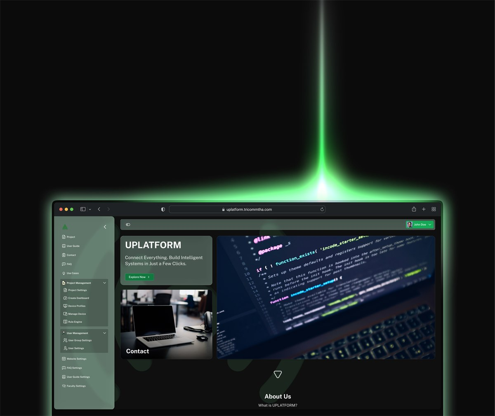
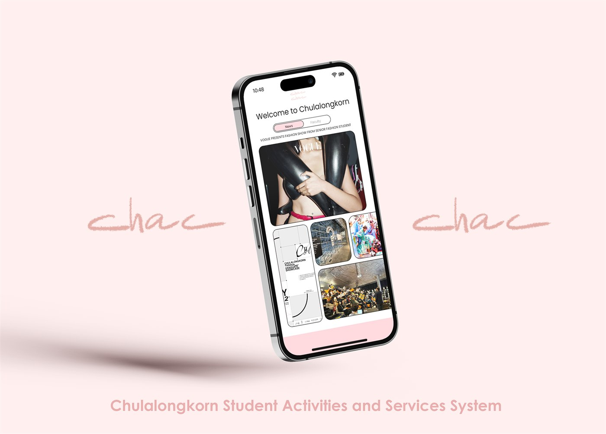
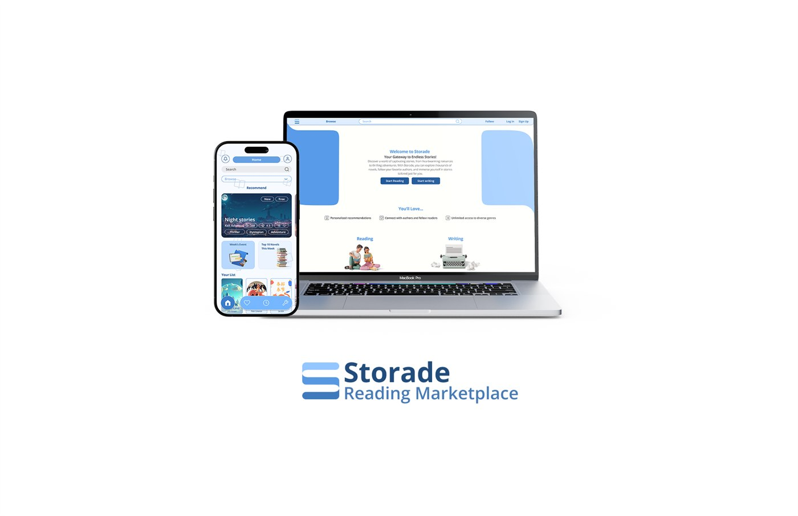
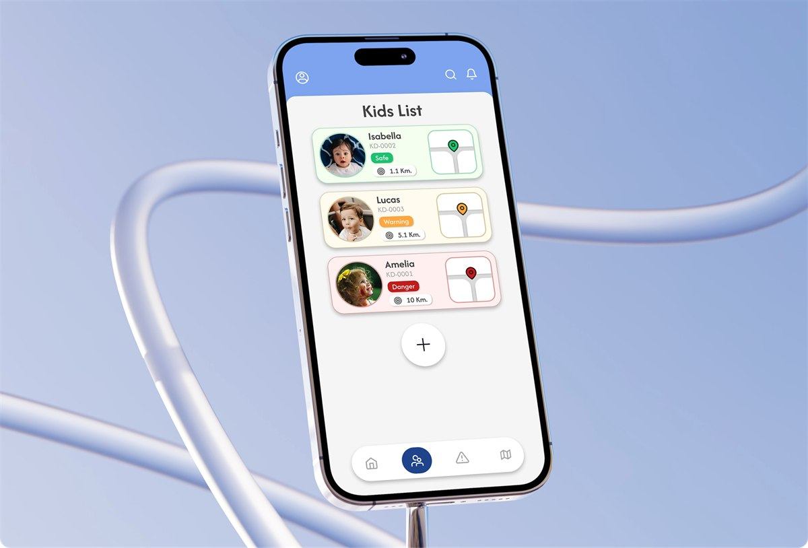
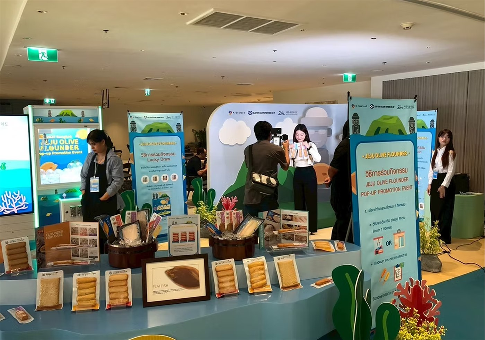
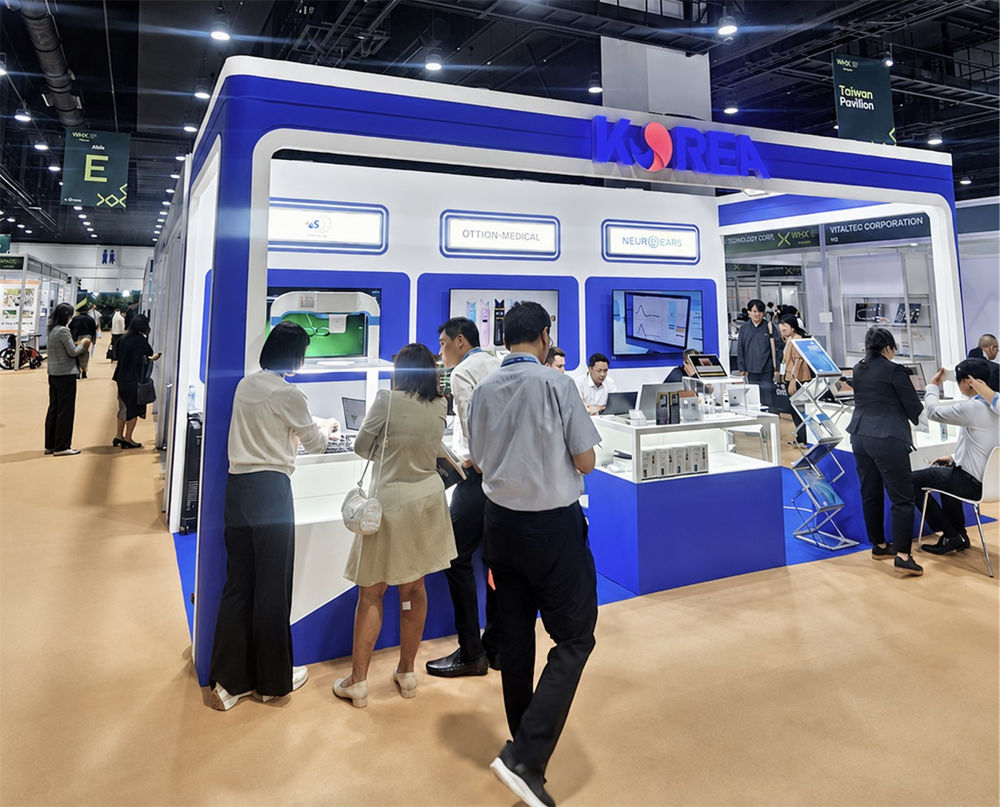
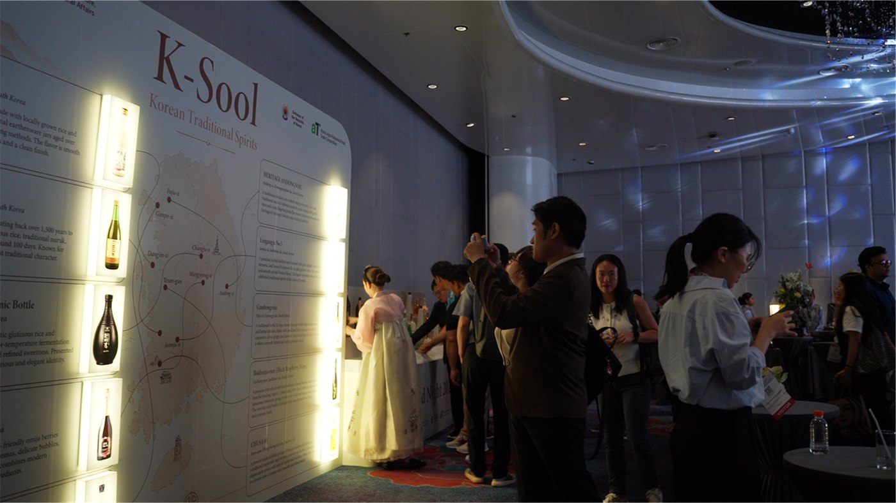
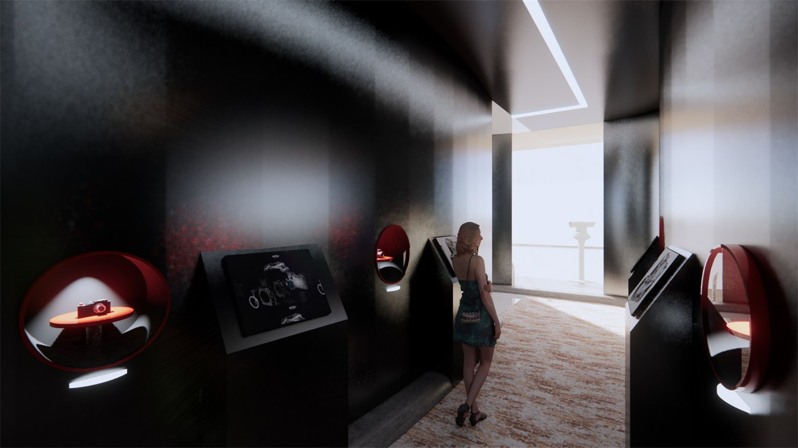
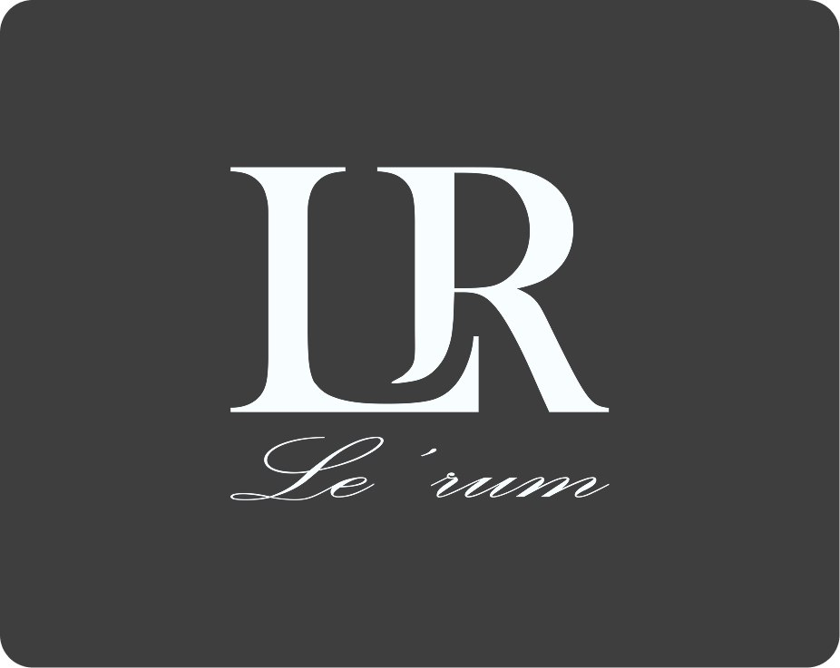

MU
A small space to rest your heart
MU turns a Thai habit, stopping at a shrine to ask for a little luck, into a two-minute ritual on your phone: private by default, no promises, open to every faith.
Product Design · UX/UI · Brand
View project
First-Class Honours, Exhibition & Experience Design,
Chulalongkorn University.
Dan Sungvornveshapan
Scroll to explore01 About
I design across the digital & the physical, connecting interface systems and built environments with UX research, 3D craft and visual design at the core.
Focus
UX ResearchJourney MappingUI & Design SystemsExperience DesignSpatial & 3D
Tools
FigmaSketchUpEnscapePhotoshopIllustratorAfter Effects
Based
Bangkok, Thailand
02 Selected Work
A small space to rest your heart
MU turns a Thai habit, stopping at a shrine to ask for a little luck, into a two-minute ritual on your phone: private by default, no promises, open to every faith.
Product Design · UX/UI · Brand
View project03 Experience
Six roles across product, events and space, from 2022 to now.
Oct 2025 – Aug 2026
MultiTab Co., Ltd.
Jun – Aug 2025
TRINERGY COMM-THA Co., Ltd.
Jun – Oct 2024
Norse Republics
Apr – Jul 2023
FynnCorp Capital Group
Sep – Oct 2022
Colosseum Show Pattaya
Mar – Apr 2022
Chula Welcome Fair
04 Toolkit
05 Contact
Let’s buildEvery project in one place, grouped into UX/UI design, exhibition & space design, and brand identity. Each cover opens the full case study.









The complete career timeline: every role, with the work each one actually involved, plus education, skills and how to reach me.
Profile
Dan Sungvornveshapan
UX/UI & Spatial Experience Designer.
I connect digital products and physical spaces, from interface systems to exhibitions, with UX research, 3D craft and visual design at the core.
Education
Bachelor’s Degree, Exhibition & Experience Design
Career Timeline · 6 roles
Graphic & Event Designer
MultiTab Co., Ltd.
UI Designer · Freelance
TRINERGY COMM-THA Co., Ltd.
Photo Editor · Freelance
Norse Republics
UX/UI Designer · Internship
FynnCorp Capital Group
Scenery Designer
Colosseum Show Pattaya
Experience Designer
Chula Welcome Fair
Skills
Tools
Practice
Soft skills
Languages
Thai
Native
English
Intermediate (B1)
Get in touch